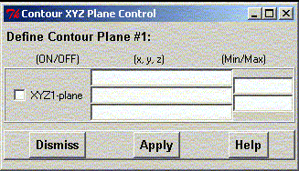

**************************************************************************
Contour Cutplane Manager Widget
Leif Laaksonen CSC 2001
**************************************************************************
Define a cutplane trough the contour surface grid data by defining three points (y y z). It is also possible to scale the display by defining min and max values.
It is possible to "drag" in the coordinates for an atom by pressing the left Ctrl key and clicking an atom with the left left mouse button. Keep the left mouse button pressed and "drag" the mouse pointer into the input field in the widget. release the left mouse button and the input field receives the coordinates of the picked atom.

Line command: see plot command
**************************************************************************
LUL/2001
**************************************************************************